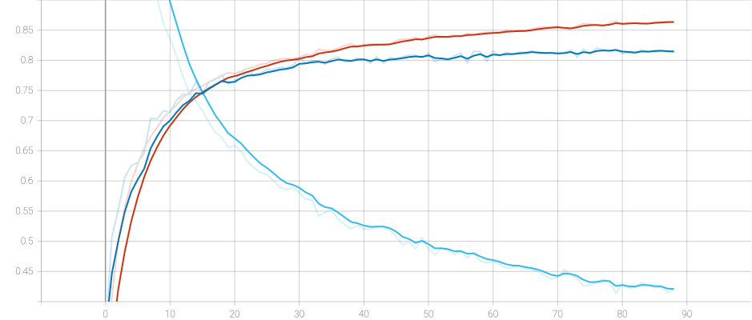

import torch
from torch import nn
from torch.utils.data import DataLoader
from torchvision import transforms, datasets
from torch.utils.tensorboard import SummaryWriter
import os
import timebatch size设置为256加快训练速度，并且做了图像增广处理。
batch_size = 256
# 官方推荐的CIFAR-10标准化参数
CIFAR10_MEAN = [0.4914, 0.4822, 0.4465]
CIFAR10_STD = [0.2470, 0.2435, 0.2616]
# 训练集transform（包含数据增强）
train_transform = transforms.Compose([
# 数据增强
transforms.RandomCrop(32, padding=4), # 随机裁剪（带4像素填充）
transforms.RandomHorizontalFlip(p=0.5), # 50%概率水平翻转
transforms.ColorJitter(brightness=0.2, contrast=0.2, saturation=0.2), # 颜色扰动
# 基础转换
transforms.ToTensor(), # 转换为Tensor并归一化到[0,1]
# 标准化（使用CIFAR-10专用参数）
transforms.Normalize(mean=CIFAR10_MEAN, std=CIFAR10_STD)
])
# 测试集transform（无增强）
test_transform = transforms.Compose([
transforms.ToTensor(),
transforms.Normalize(mean=CIFAR10_MEAN, std=CIFAR10_STD)
])
train_dataset = datasets.CIFAR10(
root='./data',
train=True,
transform=train_transform,
download=True
)
test_dataset = datasets.CIFAR10(
root='./data',
train=False,
transform=test_transform,
download=True
)
train_iter = DataLoader(
dataset=train_dataset,
batch_size=batch_size,
shuffle=True,
num_workers=4,
pin_memory=True
)
test_iter = DataLoader(
dataset=test_dataset,
batch_size=batch_size,
shuffle=False,
num_workers=4,
pin_memory=True
)定义AlenNet模型
CIFAR-10的尺寸是 3 \times 32 \times 32，需要调整卷积核和padding大小适应图像输入。
net = nn.Sequential(
# 输入: 3×32×32 (CIFAR-10尺寸)
# 卷积块一
nn.Conv2d(3, 64, kernel_size=3, stride=1, padding=1), # 输出: 64×32×32
nn.BatchNorm2d(64), # 批归一化
nn.ReLU(),
nn.MaxPool2d(kernel_size=2, stride=2), # 输出: 64×16×16
# 卷积块二
nn.Conv2d(64, 192, kernel_size=3, padding=1), # 输出: 192×16×16
nn.BatchNorm2d(192),
nn.ReLU(),
nn.MaxPool2d(kernel_size=2, stride=2), # 输出: 192×8×8
# 卷积块三
nn.Conv2d(192, 384, kernel_size=2, padding=0), nn.ReLU(), # 输出: 384×7×7
nn.Conv2d(384, 256, kernel_size=2, padding=0), nn.ReLU(), # 输出: 256×6×6
nn.Conv2d(256, 256, kernel_size=2, padding=0), nn.ReLU(), # 输出: 256×5×5
nn.MaxPool2d(kernel_size=2, stride=2), # 输出: 256×2×2
nn.Flatten(),
# 中间层
nn.Linear(256*2*2, 512), nn.ReLU(), # 增加中间层
nn.Dropout(p=0.5),
nn.Linear(512, 256), nn.ReLU(), # 增加中间层
nn.Dropout(p=0.5),
# 输出层
nn.Linear(256, 10) # CIFAR-10有10个类别
)X = torch.randn(1, 3, 32, 32)
for layer in net:
X=layer(X)
print(layer.__class__.__name__,'output shape:\t',X.shape)Conv2d output shape: torch.Size([1, 64, 32, 32])
BatchNorm2d output shape: torch.Size([1, 64, 32, 32])
ReLU output shape: torch.Size([1, 64, 32, 32])
MaxPool2d output shape: torch.Size([1, 64, 16, 16])
Conv2d output shape: torch.Size([1, 192, 16, 16])
BatchNorm2d output shape: torch.Size([1, 192, 16, 16])
ReLU output shape: torch.Size([1, 192, 16, 16])
MaxPool2d output shape: torch.Size([1, 192, 8, 8])
Conv2d output shape: torch.Size([1, 384, 7, 7])
ReLU output shape: torch.Size([1, 384, 7, 7])
Conv2d output shape: torch.Size([1, 256, 6, 6])
ReLU output shape: torch.Size([1, 256, 6, 6])
Conv2d output shape: torch.Size([1, 256, 5, 5])
ReLU output shape: torch.Size([1, 256, 5, 5])
MaxPool2d output shape: torch.Size([1, 256, 2, 2])
Flatten output shape: torch.Size([1, 1024])
Linear output shape: torch.Size([1, 512])
ReLU output shape: torch.Size([1, 512])
Dropout output shape: torch.Size([1, 512])
Linear output shape: torch.Size([1, 256])
ReLU output shape: torch.Size([1, 256])
Dropout output shape: torch.Size([1, 256])
Linear output shape: torch.Size([1, 10])开始训练
# 总数据集大小
train_data_size = len(train_dataset)
test_data_size = len(test_dataset)
# 每个epoch内部循环次数
train_iter_size = len(train_iter)
test_iter_size = len(test_iter)
print(f'训练数据集大小：{train_data_size}, 测试数据集大小：{test_data_size}')
# 定义模型
device = torch.device('cuda' if torch.cuda.is_available() else 'cpu')
net = net.to(device)
# 超参数
learning_rate = 3e-4
num_epochs = 150
# 损失函数和优化器
loss_fn = nn.CrossEntropyLoss()
loss_fn = loss_fn.to(device)
optimizer = torch.optim.Adam(net.parameters(), lr=learning_rate)
# 记录训练和测试的步数
total_train_steps = 0
# 添加tensorboard
# 生成时间戳目录名
log_dir = r'./logs'
# 自动创建新目录
os.makedirs(log_dir, exist_ok=True)
writer = SummaryWriter(log_dir) # 自定义目录
for epoch in range(num_epochs):
start_time = time.time()
# 训练阶段
net.train()
total_train_accuracy = 0
total_train_loss = 0
for train_batch, label in train_iter:
train_batch, label = train_batch.to(device), label.to(device)
output = net(train_batch)
loss = loss_fn(output, label)
# 优化器模型
optimizer.zero_grad()
loss.backward()
optimizer.step()
total_train_steps +=1
# 累计损失率
total_train_loss += loss
# 累计准确度
accuracy = (output.argmax(1) == label).sum()
total_train_accuracy += accuracy.item()
# if total_train_steps % (train_iter_size // 5) == 0:
# print(f'训练进度：{total_train_steps}/{train_iter_size * num_epochs}，loss：{loss.item()}')
# 测试阶段
net.eval()
total_test_accuracy = 0
with torch.no_grad():
for test_batch, label in test_iter:
test_batch, label = test_batch.to(device), label.to(device)
output = net(test_batch)
accuracy = (output.argmax(1) == label).sum()
total_test_accuracy += accuracy.item()
train_loss = total_train_loss/train_iter_size
train_acc = total_train_accuracy/train_data_size
test_acc = total_test_accuracy/test_data_size
# 绘制图表
writer.add_scalars("AlexNet", {
'train_loss_epoch': train_loss,
'train_acc_epoch': train_acc,
'test_acc_epoch': test_acc
}, epoch)
end_time = time.time()
print(f"epoch：{epoch}，训练集损失：{train_loss}，训练集准确度：{train_acc}，测试集准确度：{test_acc}")
print(f"训练耗时：{(end_time - start_time):2f}")
torch.save(net.state_dict, f"AlexNet_epoch{epoch}.pth")
writer.close()训练效果不是很好，准确率只能达到80%上下，并且有点过拟合了。
